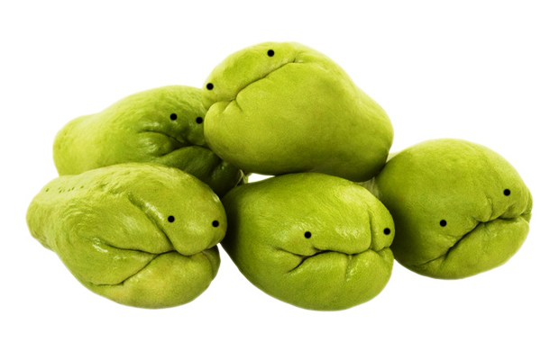

seema vankaya pappu
bangalore chayote dhal
nice chunks of the world's grouchiest vegetable
- a few cups of red lentils
- 1 onion
1-2 chayotes
- green chillies
- turmeric
- chilli powder
- 1/2 tsp asafoetida (hing)
- 1/2 tsp tamarind
- 1-2 tomatoes
- mustard seeds
- cumin seeds
- dry red chilli
- garlic
- curry leaves
- Remove the seeds from the chayote, and chop into half-inch chunks. Chop, onion, chillies and tomatoes, and put with chayote in a pan with the dal. Add lots of water, cover with a tight-fitting lid and boil for at least 30 minutes (you can also do this part in a pressure cooker).
- when the dal is getting soft, heat oil in a pan and add mustard seeds till they pop, then cumin, cracked red chillies, chopped garlic, hing and curry leaves.
- fry till fragrant, then empty into the cooked dal. Add in the tamaring, turmeric, red chilli powder and salt, and cook for 5 more minutes.
I use red lentils for this, but moong dal or toor dal might be better! If you can't find a chayote, this should also work with gourds. This is great accompaniment to
aloo paratha.